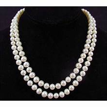
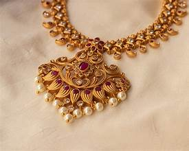
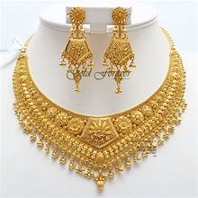
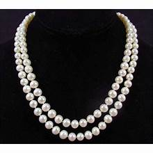
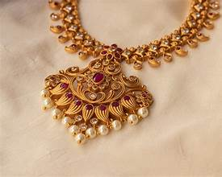
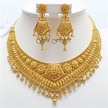

Your About Us page is one of the first supporting pages you’ll likely design when building your website, regardless of the industry you’re in. It may go by different labels—About, Story, Mission—but these types of pages serve the same key purpose: to be the page for a brand to say, “This is who we are.” Click here to start selling online now with Shopify When a visitor wants to learn more about you or your business, the About page is what they’ll look for. What is an About Us page? An About Us page is a section on a website that provides information about a company, organization, or individual. It is an opportunity to tell your brand’s story, share your vision, history, values, and achievements, and introduce team members. This is where you build trust and credibility with customers. In Shopify’s customer trust research, we found shoppers navigate to an About Us page to learn more about the brand and the people behind the products. Your About Page should address those two curiosities shoppers have to help them with decision making. Shoppers are also interested in a company’s mission. They’ll use the About Us page to determine if they share core values with the business and to decide if they want to shop with you or not. Components of an About Us page In contrast to a landing page, your About Us page should focus more on your brand identity and less on sales. Here are some components to include: Your brand story. Tell shoppers the origin story of your business and why you started it. For the most impact, make it memorable and personal, so customers relate and connect with your brand. Who you serve. What do you offer and who is it for? Help shoppers see the value of your product or service by sharing how it solves problems or needs. How you operate. If you offer a service, explain your business model or how your products are made. If you have a unique way of doing things, show it. This builds credibility with shoppers and helps you stand out against competitors. The face of your business. Feature photos of the founders or key people on your team. Customers like to see who they are buying from or working with. Persuasive content. Consider what step you’d like readers to take next. Use additional content and calls to action to move them forward towards that goal. This could include buttons, testimonials, an explainer video, data visualizations, links to blog posts, products, your social media accounts or newsletter. Your About Us page is going to be about you, but that doesn’t mean you can’t borrow some ideas from others, especially when it comes to structure and design. The following are examples of different ways you can tackle your About Us page design.
 




